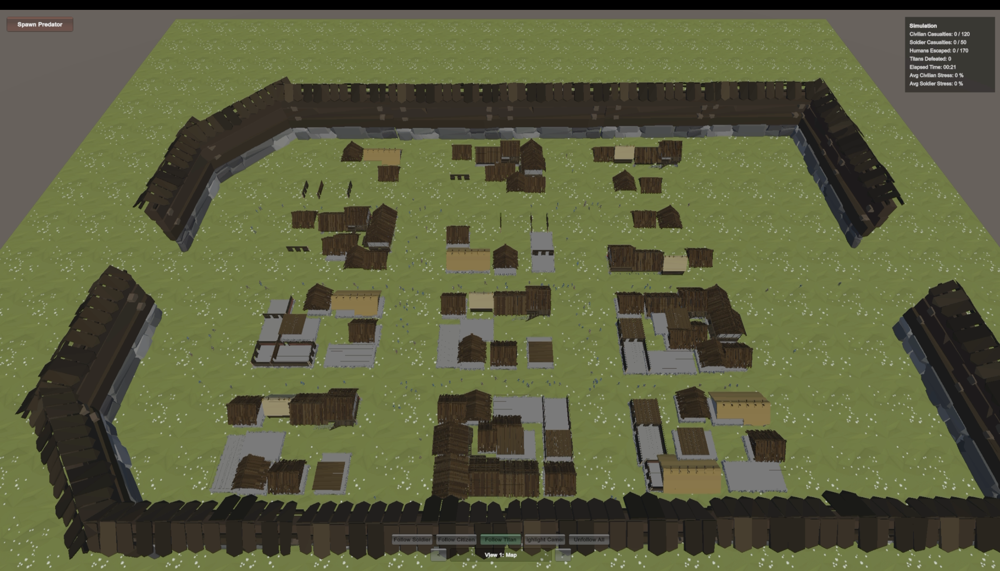
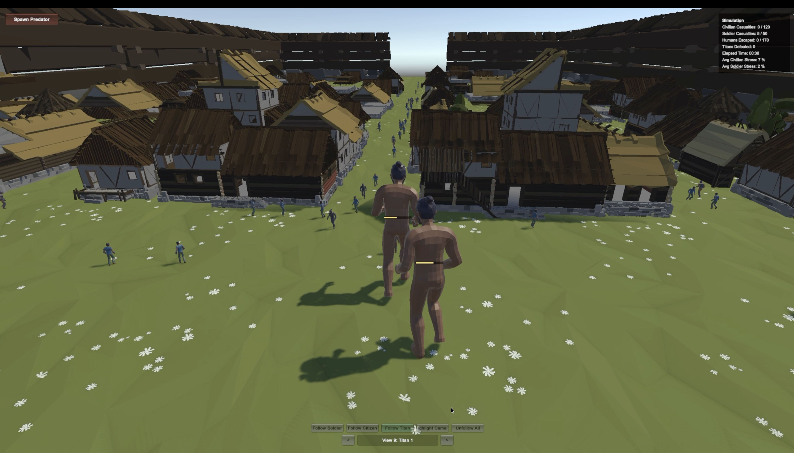
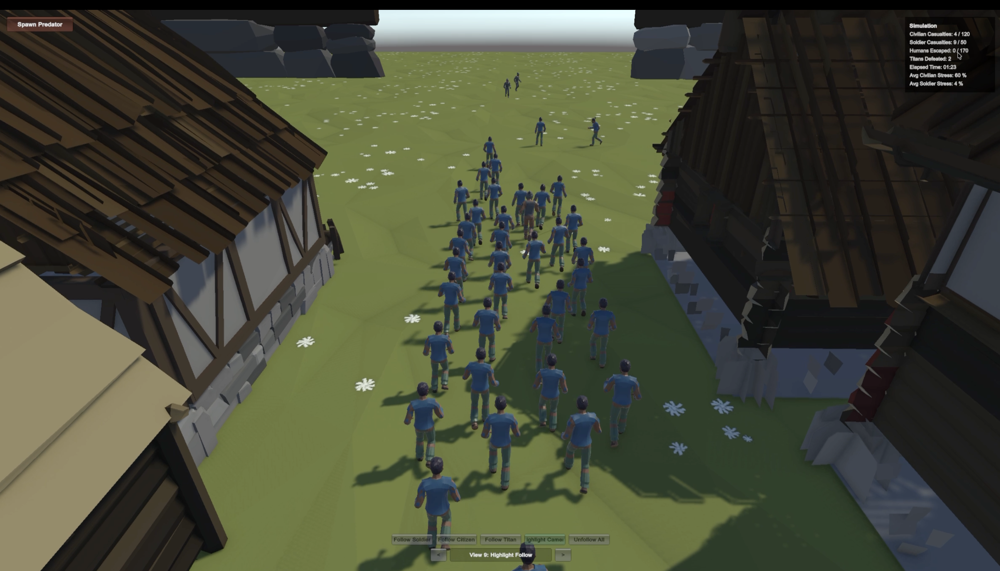

Project Information
Title: Artificial Life City Simulation
Team members: Name One, Name Two, Name Three
Abstract:
We built a 3D artificial-life simulation in Unity where autonomous prey agents navigate a city using local perception and kinematic steering. Prey combine Reynolds-style flocking (separation, alignment, cohesion) with obstacle avoidance, predator fleeing, and waypoint-based wandering. Predators use pursuit steering to chase and consume prey, disrupting emergent crowd behavior. Internal stress and fatigue modulate movement, and civilians evacuate toward exit points when threat levels rise. The system demonstrates schooling, scattering under attack, and population-level dynamics in an interactive 3D demo exported for the web.
Behavior Model
Perception
Spatial queries for flockmates, predators, obstacles, and bounds each frame.
Action selection
Flee and avoidance take priority over path following, flocking, and wander.
Steering
Combined steering vectors clamped by max speed and acceleration.
Emergence
Crowds form, scatter under threat, and re-route through the city network.
Live Demo
Click Spawn Predator (bottom-left). Use Q / E or the view selector (bottom-center) to change camera angles.
Loading interactive demo…
Project Report
Written report describing architecture, behavior model, implementation, and results.
Download report.pdfRepresentative Images



Source Code & Executable
Unity project source and WebGL browser build.
Open source/ folder GitHub repository├── Assets/Scripts/Agents/ PreyAgent, PredatorAgent
├── Assets/Scripts/Simulation/ SimulationManager, navigation, WebGL
├── Assets/Scenes/MainSimulation.unity
├── webgl/ browser executable (WebGL build)
└── README.md